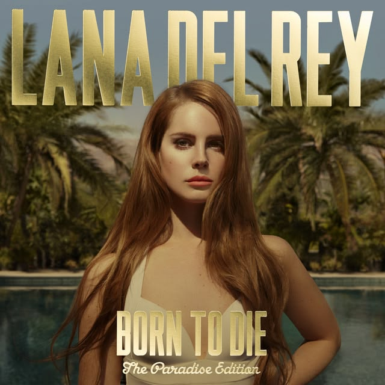

Born to Die
2012
El álbum debut que cambió el panorama del pop alternativo. Un viaje orquestal lleno de melodrama, glamour vintage y desamor.
Nostalgia, glamour trágico y la poesía de la América moderna.
Elizabeth Woolridge Grant, conocida artísticamente como Lana Del Rey, nació el 21 de junio de 1985 en Nueva York. Criada en Lake Placid, comenzó a componer canciones a una edad temprana, desarrollando una voz artística única fuertemente influenciada por la cultura pop estadounidense de los años 50 y 60, el cine clásico y el romanticismo trágico.
Tras varios intentos bajo diferentes seudónimos, fue en 2011 cuando el sencillo independiente "Video Games" se convirtió en un fenómeno viral de internet, catapultándola a la fama mundial y estableciendo su estética barroca y melancólica que definiría la década.

2012
El álbum debut que cambió el panorama del pop alternativo. Un viaje orquestal lleno de melodrama, glamour vintage y desamor.

2014
Producido por Dan Auerbach, ofrece un sonido más sombrío, lleno de guitarras distorsionadas, rock psicodélico y letras melancólicas.

2015
Un regreso a los arreglos cinematográficos y lentos, impregnado de una atmósfera veraniega, lánguida y poética.

2019
Aclamado universalmente por la crítica como su obra maestra, combina folk-pop californiano con una lírica brillante sobre el sueño americano.
Lana Del Rey ha transformado el sonido de la música pop contemporánea, introduciendo una cadencia más lenta, melancólica y cinematográfica que influyó en toda una generación de nuevos artistas. Su estética visual y temática ha dejado una marca indeleble en la cultura pop.